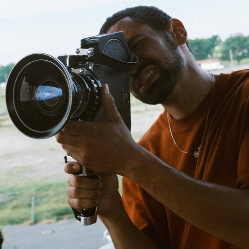
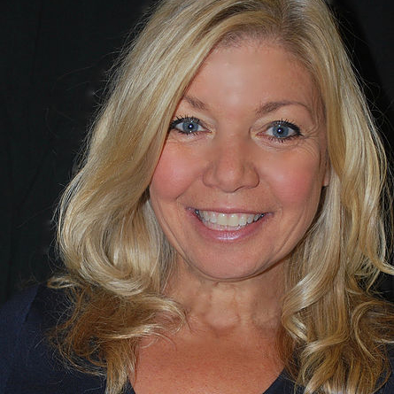

Music by Fitch High School Alum Twayne the Kidd
Films in order of appearance:
1 - "Bestie" by Rodrigo Mariano, Saint Bernard School, 2019
2 - "Ire" by Hailey-Mae Peel, Stonington High School, 2019
3 - "Alias" by by Ezra Lyon & Ben Desaulnier, Killingly High School, 2016
4 - "Backcountry" by Quinian Gervasio, Killingly High School, 2019
5 - "Prom Rocks" by Rodrigo Mariano, St. Bernard High, 2018
6 - "The Journey to Lake Asthen" by Rex Thrustan, ACT School, 2019
7 - "The Open" by Colin Farrar & Devin St. Jean, RHAM High School, 2016
8 - "PRISONER'S CINEMA" by Melinda Li, East Lyme High, 2014
9 - "Golf Cart Drift" by Kyle Ahlberg, Bacon Academy, 2014
10 - "The Journey to Lake Asthen" by Rex Thrustan, ACT School, 2019
11 - "Desertion of the Mind" by Devin St. Jean, RHAM High School, 2016
12 - "Backcountry" by Quinian Gervasio, Killingly High School, 2019
13 - "Locke" by Jack Adam Miceli, East Lyme High, 2018
14 - "Bestie" by Rodrigo Mariano, Saint Bernard School, 2019
15 - "Prom Rocks" by Rodrigo Mariano, St. Bernard High, 2018
16 - "VirusX" by Alyssa Hansen, Killingly High, 2018
17 - "The Alternate Energy Committee" by Thayne Hutchins, Woodstock Academy, 2016
18 - "Prom Rocks" by Rodrigo Mariano, St. Bernard High, 2018
19 - "Blue Note" by Tyler Lemire, ACT Magnet School, 2018
20 - "Golf Cart Drift" by Kyle Ahlberg, Bacon Academy, 2014
21 - "Blue Note" by Tyler Lemire, ACT Magnet School, 2018
22 - "At Heart II" by Lionel R. Jeffries, Tolland High School, 2017
23 - "The Trip to Wyoming" by Aurora Hooper, Lyman Memorial High School, 2014
24 - "PRISONER'S CINEMA" by Melinda Li, East Lyme High, 2014
25 - "Bestie" by Rodrigo Mariano, Saint Bernard School, 2019
26 - "Locke" by Jack Adam Miceli, East Lyme High, 2018
27 - "The Alternate Energy Committee" by Thayne Hutchins, Woodstock Academy, 2016
28 - "VirusX" by Alyssa Hansen, Killingly High, 2018
29 - "At Heart II" by Lionel R. Jeffries, Tolland High School, 2017
30 - "Match" by Patrick John Blair, ACT School, 2014
31 - "The Trip to Wyoming" by Aurora Hooper, Lyman Memorial High School, 2014

an opportunity for connecticut high school filmmakers to shine
screen your short, win prizes, get on the map
Let's face it, creative opportunities like this don't come around that often around here. Submit today.
custom-designed movie posters
All selections get custom-designed movie posters that you can take home.
scholarship prizes
First, second and third overall best films take home scholarship money.
awards
Winners in categories like Best Cinematography win trophies and equipment.
MEET THE 2022 JUDGES
Daymian Mejia
Daymian Mejia is a Dominican-American cinematographer, colorist, and director who produces an emotional image that brings a new breath to every frame captured. Daymian depicts not only what is in front of the lens but what should be felt by the viewer, cultivating a distinct sense of mood through his love of music videos. Daymian's 2021 film SELF-TITLED was an official selection at New York Latino Film Festival, European Cinematography Awards and LA Cinematography Awards. He's worked on many music videos for Van Buren Records, Ooompa, Connis, and more.
Susan Cardillo
Susan Cardillo is a Digital Media and Journalism professor at The University of Hartford who teaches storytelling media including documentary, web, and short form video. She strives to help create stories/media/art that will bring about social awareness, civic engagement and ultimately social change. She also teaches Career Development as well as Public Speaking to help students give a positive and passionate voice to their generation. Prior to teaching, Cardillo worked in Los Angeles as production manager and associate producer for film and television projects with DeLaurentiis Pictures. She also worked for 20 years as a stage, TV and film actress.
TBD
Announcing the third judge soon.
Where are they now?
Bartos, Nick
Nick Bartos (BAND AID – QCFF'14) graduated from UCONN's Digital Media & Design program in 2019. He interned at the digital agency Primacy and worked as a Video Production Assistant at UCONN. Nick has also been a freelance videographer and photographer for the New York Red Bulls for 3 seasons now, and recently started his own social media video company in Manchester, CT called Social Motion.
Bonsall, Cade
Cade Bonsall (INTRUSION – QCFF'17) graduated from Killingly High School in 2017. Afterward, he went on to study film production at Keene State College in New Hampshire. During his senior year, he secured a remote internship as a sound editor for EV Productions; a production company in LA. After graduating college in May 2021, He continued to work for the company’s co-founder. He is now currently employed as a remote assistant editor for both sound and video on a podcast series known as “The Coriolis Effect”, which currently airs on YouTube. The hosts of the show have asked him to join in their future projects including web-based, TV, and film work.
Briere, Jordan
Jordan Briere (THE LAST PAGE - QCFF'14) graduated from Fitchburg State University with a BS in Comms & Media Studies. Jordan interned at Boston Digital Productions, worked as a Video Editor at Isabella Garrucho Fine Art and a Photographer's Assistant at Madore Photography.
Hooper, Aurora
Aurora Hooper (THE TRIP TO WYOMING – QCFF'14) interned at Cannes Film Festival. After graduating from Full Sail and Husson University, Aurora worked as a content creator at Mount Snow and shot and edited wedding videos with Epic Filmmakers in Amherst MA. She's currently the full-time videographer at L.L. Bean and is a freelance photographer based in Southern Maine.
Hutchins, Thayne
Thayne Hutchins (FAIR – QCFF'18, TO READ WITHOUT EYES – QCFF'17, KINDNESS MAFIA – QCFF'17, THE ALTERNATE ENERGY COMMITTEE – QCFF'16) is currently pursuing a degree in Cinematography from UCONN. He's also worked as a tech hand at Mohegan Sun Arena.
Jeffries, Lionel
Lionel Jeffries (AT HEART – QCFF'16, COLD SWEAT – QCFF'16, THE NECROMANCER – QCFF'17, AT HEART II – QCFF'17, EUPHORIC – QCFF'18, AT HEART III – QCFF'18) is in his senior year as a film student at the University of Rhode Island. His film LIVING SWAMP, about the Great Swamp Massacre where hundreds of Narragansett people were slain by English settlers, was currently featured on Rhode Island PBS. It has also been accepted at the Mystic Film Festival. Lionel shot it on 16mm and Super 8mm.
Li, Melinda
Melinda Li (PRISONER'S CINEMA – QCFF'14) recently graduated from Harvard and has already worked at some big names in the film/TV world including Village Roadshow, Plan B Entertainment, Anonymous Content, Women in Film, ReFrame and Warner Bros. She also was the Co-Director of the Harvard College Film Fest. She currently works as a Creative Executive/TV Development & Production for Viola Davis' production company JuVee Productions.
Lyon, Ezra
Ezra Lyon (ALIAS – QCFF'16) designs and fabricates furniture and decor (and takes photographs of them) through his business Tamarack Fabrication.
Mainville, Tyler
Tyler Mainville (BIKE: A LOVE STORY – QCFF'14) graduated with a Film Production degree from the University of Creative Arts in the UK. Tyler helped run the school's gardening collective (UCA Growers Society) and organized screenings of eco-films.
Stafford, Dev
Dev Stafford (0013: LIVE ANOTHER DAY – QCFF'14, DESERTION OF THE MIND – QCFF'16, THE OPEN – QCFF'16) recently graduated from Pace University, where he was the Lead Editor at PaceDocs. Dev's worked on many short films and documentaries, is currently the videographer at BestLogic Staffing, and is a freelance videographer/content creator.
{kind=link}
{kind=link}
{kind=link}